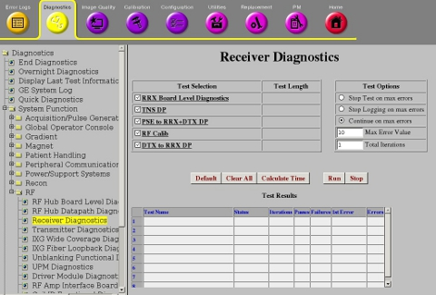
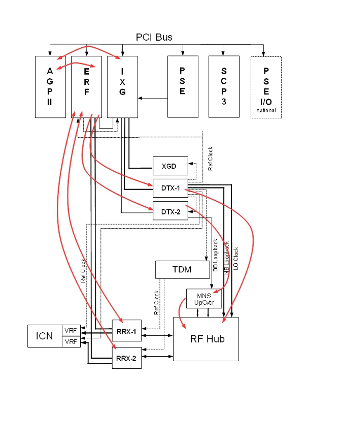

Operating Documentation
Direction 5670006, Rev# 1
Discovery MR750w GEM Service Methods
Module Version 3.0, Version Date 8/29/11
Operating Documentation |
Diagnostics >> System Function >> RF >> Receiver Diagnostics
Diagnostics >> Hardware Location >> Magnet Room >> Receiver Diagnostics
Illustration 1: Receiver Diagnostics

The PSE to RRX + DTX data path diagnostic tests the IXG’s ability to send sequence bus data to the DTX and RRX modules. All of the sequence bus data registers of the RRX and DTX modules are tested to ensure they capture the correct data from the sequence data stream. The AGP Board runs the test.
Boards tested on standard systems:
IXG
DTX-1
RRX-1
RRX-2
For MNS systems, additional boards are tested:
DTX-2
Upconverter
ERF
None
If your system has the MNS option, the PCI Bus will include an ERF board. RRX-1 and RRX-2 connect through the ERF board instead of the IXG board.
Illustration 2: Data Path of 32 Channel System - Standard Configuration

Illustration 3: Data Path of 32 Channel System - MNS Configuration

Click [Calculate Time] to get an estimate of the time it will take to run the selected diagnostic.
Click [Run] to initiate test.
| NOTE: | The Test Options settings should not be changed from their default settings unless instructed to do so by a GE Healthcare engineer. These settings rarely ever need to be changed. |
Output values are judged pass or fail. In the event of failure, the details of the failure can be found in the GE System Log. It is recommended to review all the errors recorded in this log. If there are errors, click the 1st Error number to see the nature of the error and continue viewing each error in this fashion.
If DTX-1 Board is replaced, run:
No calibration is needed if the RRx, IXG or AGP are replaced.